11
Using Bookmarks and Views
You can bookmark design views and return to them during the current or future sessions. You can create a bookmark of a single view or a composite bookmark of all tabs in your session window. You can restore bookmark design views and import/export bookmark files. You can designate whether your bookmarks appear only on the bookmarks menu or also on the Bookmarks toolbar. You can select bookmarks from the menu or from the Bookmarks toolbar.
You can use bookmarks with any of the following Cadence applications:
- Virtuoso Schematic Editor L/XL
- Virtuoso Layout Suite Viewer/XL/EXL
- Virtuoso ADE Explorer
- Virtuoso ADE Assembler
- Virtuoso ADE Verifier
- Virtuoso Text Editor
The program stores bookmark information in ./.cadence/dfII/bookmarks/username.bookmarks. The program searches for global bookmark information in global.bookmarks. For more information on storage, see File Storage.
.bkm extension (such as the old format global bookmarks.bkm file), it converts them to the .bookmarks format.You can read more about bookmarks in the following sections:
- Adding the Bookmarks Toolbar to a Session Window
- Bookmarking Designs
- Restoring a Bookmark
- Managing Bookmarks
- Managing Composite Bookmarks
- Working with Views
Adding the Bookmarks Toolbar to a Session Window
To add the Bookmarks toolbar to your current session window, do one of the following:
- Right-click in the toolbar area of the session window and click to mark the Bookmarks item on the pop-up menu.
-
Choose Window – Toolbars – Bookmarks.
The program adds the Bookmarks toolbar to your current session window.
See also “Adding Assistant Panes and Toolbars to a Workspace”.
Bookmarking Designs
You can bookmark any number of cellviews.
To add a bookmark for the current design or a collection of open designs (creating a composite bookmark), do the following:
-
In the session window, choose File – Bookmarks – Add Bookmark.
The Add Bookmark form appears.
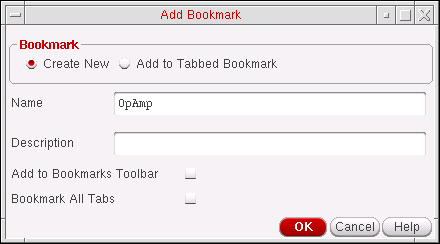The name of the current design cellview appears in the Name field. -
Select the Create New bookmark option.For information on using the Add to Tabbed Bookmark option see Adding Bookmarks to Existing Composite Bookmarks.
- (Optional) In the Name field, type a different name for your bookmark.
-
(Optional) In the Description field, type a description for your bookmark.
This text appears in the Description column of the Bookmarks Manager window. -
(Optional) If you want your bookmark to also appear on the Bookmarks toolbar, check the Add to Bookmarks Toolbar check box.
-
(Optional) If you want to add a composite bookmark for all the tabs in your session window, check the Bookmark All Tabs check box.
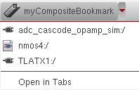A composite bookmark lists all the views that it comprises of. You can choose to open one bookmark or all of them (Open in Tabs). -
Click OK
The bookmark will be created and optionally added to the Bookmarks toolbar. Otherwise, the bookmark will be available from the bottom of the File - Bookmarks menu options in both the CIW and the current session window, and also from the Bookmarks Manager form (see Managing Bookmarks).
Restoring a Bookmark
You can restore single or composite bookmarks using the File – Bookmarks menu or from the Bookmarks toolbar. A composite bookmark is a bookmark created from all tabs in a session window (see “Bookmarking Designs”). When you restore a composite bookmark, you can restore the entire set of tabs or just one of the tabs that makes up the set.
The following symbols identify single bookmarks (schematic, symbol, layout views):
The following symbol identifies a composite bookmark:
- Restoring a Single Bookmark from the Bookmarks Toolbar
- Restoring a Composite Bookmark from the Bookmarks Toolbar
- Restoring a View from a Composite Bookmark on the Bookmarks Toolbar
- Restoring a Single Bookmark Using the File Menu
- Restoring a Composite Bookmark Using the File Menu
- Restoring a Cellview from a Composite Bookmark Using the File Menu
Restoring a Single Bookmark from the Bookmarks Toolbar
To restore a single bookmark from the Bookmarks toolbar, do the following:
Restoring a Composite Bookmark from the Bookmarks Toolbar
When you restore a composite bookmark, you can choose to restore the entire set of views that make up the composite bookmark, or just one view from the composite (see Restoring a View from a Composite Bookmark on the Bookmarks Toolbar for the latter).
To restore all views that comprise a composite bookmark from the Bookmarks toolbar, do the following:
-
Click the down arrow to the right of the composite bookmark name.
A drop-down menu appears. -
Select Open in Tabs.
Each view in the composite bookmark will open in an individual tab in your session window.
Restoring a View from a Composite Bookmark on the Bookmarks Toolbar
To restore one view from a composite bookmark on the Bookmarks toolbar, do the following:
-
Click the down arrow to the right of the composite bookmark name.
A drop-down menu appears.
-
Select the view you want to restore.
The bookmarked view appears in your session window.
Restoring a Single Bookmark Using the File Menu
To restore a single bookmark using the File menu, do the following:
-
In either the session window or the Command Interpreter Window,
choose File – Bookmarks.
A submenu appears. -
If the bookmark appears on the Bookmarks toolbar, choose Toolbar Bookmarks.
A pull-right menu appears. -
Select the bookmark you want to restore.
The bookmarked view appears in your session window.
See also “Managing Bookmarks”.
Restoring a Composite Bookmark Using the File Menu
To restore a composite bookmark using the File menu, do the following:
-
In either the session window or the Command Interpreter Window,
choose File – Bookmarks.
A submenu appears. -
If the bookmark appears on the Bookmarks toolbar, choose Toolbar Bookmarks.
A pull-right menu appears. -
Select the bookmark you want to restore.
A pull-right menu of views appears.
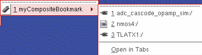 -
At the bottom of this menu, select Open in Tabs.
The bookmarked views appear on new tabs in your session window.
See also “Managing Bookmarks”.
Restoring a Cellview from a Composite Bookmark Using the File Menu
To restore a cellview from a composite bookmark using the File menu, do the following:
-
In either the session window or the Command Interpreter Window,
choose File – Bookmarks.
A submenu appears. -
If the bookmark appears on the Bookmarks toolbar, choose Toolbar Bookmarks.
A pull-right menu appears. -
Select the bookmark you want to restore.
A pull-right menu of cellviews appears.
-
Select the cellview you want to restore.
The bookmarked cellview appears in your session window.
See also “Managing Bookmarks”.
Managing Bookmarks
To begin managing your bookmarks, do the following:
-
In your session window or in the Command Interpreter Window (CIW),
choose File – Bookmarks – Manage Bookmarks.
The Bookmarks Manager window appears.
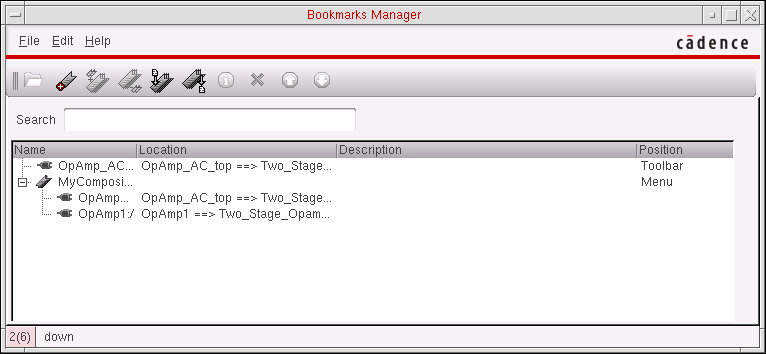
The Bookmarks Manager window contains the following information about your bookmarks:
| Column | Information |
|---|---|
|
Toolbar if the bookmark appears on the Bookmarks toolbar; otherwise, Menu |
You can perform the following tasks related to managing your bookmarks:
- Adding a Bookmark
- Importing Bookmarks
- Exporting Bookmarks
- Deleting Bookmarks
- Editing Bookmark Properties
- Opening Bookmarked Views
- Searching for Bookmarks
- Closing the Bookmarks Manager Window
Adding a Bookmark
To add a bookmark, do the following:
-
In the Bookmarks Manager window, choose Edit – Add.
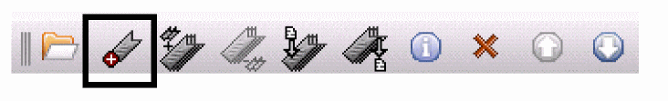The Add Bookmark form appears so that you can add a bookmark to the current tab in the current session window (see “Bookmarking Designs”).
Importing Bookmarks
To import a set of bookmarks from a valid bookmark file, do the following:
-
In the Bookmarks Manager window, choose File – Import.
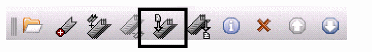The Import Bookmarks form appears.
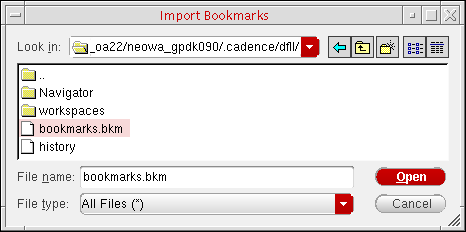 - Navigate to and select a valid bookmark file.
-
Click Open.
The program imports bookmarks from the selected file.
Setting Import Bookmark Behavior
You can choose to ignore any duplicate bookmarks that are found in an imported bookmark list.
To control imported bookmark behavior use the boolean environment variable importDuplicateBookmarks. This variable has a default setting of t, for example:
envGetVal ("ddserv" "importDuplicateBookmarks") = t
When set to t, all bookmarks that are found to be duplicates will be imported. That is, any bookmarks that share the same name and callbacks between the imported bookmark file and the current bookmark file will still be imported.
However, when importDuplicateBookmarks is set to nil, as shown below, any bookmarks that are found to be duplicate, in the file to be imported, will not be imported into the current Bookmarks Manager bookmark list.
envSetVal ("ddserv" "importDuplicateBookmarks" 'boolean nil)
Exporting Bookmarks
To export your bookmarks to a file, do the following:
-
In the Bookmarks Manager window, choose File – Export.
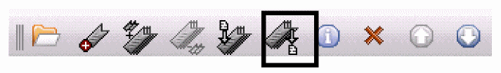The Export Bookmarks form appears.
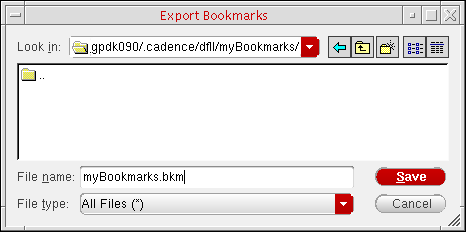 - Navigate to the location where you want to save your bookmarks file.
- In the File name field, type a name for your bookmarks file.
- Click Save.
Reordering Bookmarks
To reorder your bookmarks, do the following:
- In the Bookmark Managers window, select the bookmark entry that you want to move up or down the bookmark list.
-
On the Bookmark’s toolbar, select either the Move up... or Move down... icon to re-position the selected bookmark.
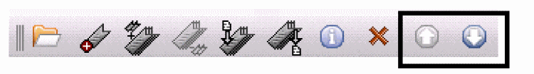
Deleting Bookmarks
To delete one or more bookmarks, do the following:
-
In the Bookmarks Manager window, select one or more bookmark names.
You can select a single bookmark, a composite bookmark, a single view that is part of a composite bookmark, or any combination of these. -
Choose Edit – Delete.
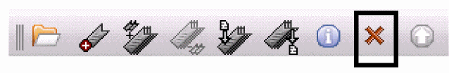The program deletes the bookmarks you selected.
Editing Bookmark Properties
To change the name, description, or position of a bookmark, do the following:
-
In the Bookmarks Manager window, choose Edit – Properties.
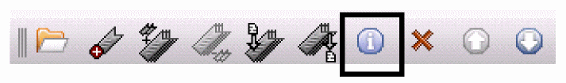The Edit Bookmark Properties form appears.
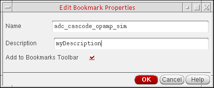 - (Optional) In the Name field, edit the name of your bookmark.
- (Optional) In the Description field, edit the description of your bookmark.
-
If you want your bookmark to appear on the Bookmarks toolbar, make sure there is a mark in the Add to Bookmarks Toolbar check box.
If you do not mark the Add to Bookmarks Toolbar check box, your bookmark appears on the File – Bookmarks submenus only. (You can choose File – Bookmarks in the session window or in the Command Interpreter Window.) -
Click OK.
The changes you made appear in the Bookmarks Manager window.
Opening Bookmarked Views
To open a bookmarked view or views, do the following:
- In the Bookmarks Manager window, select one or more bookmarks.
-
Choose File – Open.
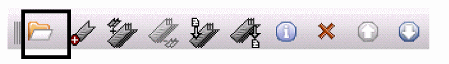The program opens the items you selected. Each selected item appears in a new session window.If you expand a composite bookmark before making your selections, be aware that each selected line in the Bookmarks Manager window counts as a selected item (up and down movement is restricted within the composite bookmark itself). The program opens each selected item in its own session window. For example, if you expand a composite bookmark containing two cellviews and select all three lines in the Bookmarks Manager window like this: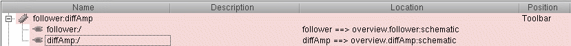when you choose File – Open, three session windows appear:
Searching for Bookmarks
To search for a bookmark, do the following:
-
In the Search field, type the search string.
The program looks for matching strings in the Name, Location, and Description columns.
As you type, the Bookmarks Manager filters all bookmarks such that only those whose names, locations, or descriptions contain the search string appear in the window. If the program finds a matching string in a bookmark that is part of a composite bookmark, the program displays the expanded tree for that composite bookmark so that you can see the matching string.
You can restore the complete list by deleting the search string.
You can perform the following tasks on the selected bookmark or bookmarks:
Closing the Bookmarks Manager Window
To close the Bookmarks Manager window, do the following:
Viewing Help for the Bookmarks Manager
To view Help for the Bookmarks Manager, do the following:
Viewing Cadence Documentation from the Bookmarks Manager
To view general Cadence documentation from the Bookmarks Manager, do the following:
Managing Composite Bookmarks
You can manage existing composite (tabbed) bookmarks with the following bookmark features:
- Adding Bookmarks to Existing Composite Bookmarks
- Creating Composite Bookmarks from Existing Bookmarks
- Detaching Bookmarks from Existing Composite Bookmarks
Adding Bookmarks to Existing Composite Bookmarks
To add another bookmark to an existing collection of bookmarks:
-
In the session window, choose File – Bookmarks – Add Bookmark.
The Add Bookmark form appears.
The name of the current design cellview appears in the Name field. -
Select the Add to Tabbed Bookmark option.
The Add Bookmark form updates to reflect the new setting.
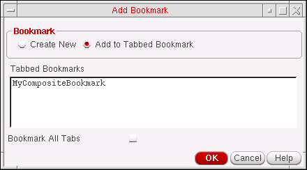All existing tabbed bookmarks are listed in the Tabbed Bookmarks section. - Select the tabbed bookmark that you want to add the current bookmark to.
-
(Optional) If you want to add all the current tabs in your session window to the selected tabbed bookmark, check the Bookmark All Tabs check box.
-
Click OK.
The bookmark will be added to the selected composite bookmark and displayable in the Bookmarks Manager when the composite is expanded.
Creating Composite Bookmarks from Existing Bookmarks
You can create composite (tabbed) bookmarks from one or more existing bookmarks. These bookmarks can be either non-composite bookmarks and/or bookmarks that are already part of existing composites.
To create a composite bookmark from existing bookmarks:
- In the Bookmarks Manager, select the bookmarks that you want to create a composite bookmark for (or to add to an existing composite bookmark).
-
Select Edit – Create Tabbed Bookmark.
The Create Tabbed Bookmark form is displayed with the selected bookmark names displayed in the Name field.
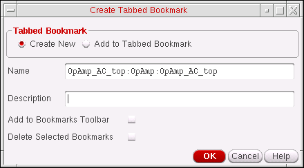 - Select to either create a new (Create New) tabbed bookmark, to contain the selected bookmarks, or an existing tabbed (composite) bookmark (Add to Tabbed Bookmark).
- (Optional) In the Name field, type a different name for your bookmark.
-
(Optional) In the Description field, type a description for your bookmark.
This text appears in the Description column of the Bookmarks Manager window. -
(Optional) If you want your composite bookmark to also appear on the Bookmarks toolbar, check the Add to Bookmarks Toolbar check box.There is no limit to the number of bookmarks you can add to the Bookmarks toolbar. However, when the Bookmarks toolbar area is full, a “>>” pull-down appears on the right side of the toolbar so that you can select additional bookmarks that do not appear because of space restrictions.Go to step 8.
-
Selecting the Add to Tabbed Bookmark option updates the Create Tabbed Bookmark form to display a section that contains all the existing Tabbed Bookmarks.
In this section, choose the existing tabbed bookmark that you want to add the additional, selected, bookmarks to.
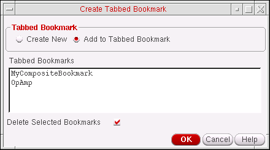 - (Optional) If you also want to remove the bookmarks from their original bookmark location (whether that was originally a single bookmark or a bookmark that was part of a composite), check the Delete Selected Bookmarks option.
-
Click OK
A new (tabbed) composite bookmark will be created, or the selected bookmarks will be added to an existing tabbed bookmark.
Detaching Bookmarks from Existing Composite Bookmarks
To create simple (single) bookmarks by either removing them or “copying” them from existing tabbed (composite) bookmarks:
-
In the Bookmarks Manager, select the bookmarks that you want to detach from an existing composite bookmark.By detaching a bookmark from a composite bookmark you are not automatically deleting the bookmark from its composite host (see step 4 below).
-
Select Edit – Detach Selected Bookmarks (or select Detach Selected Bookmarks from the Bookmarks Manager toolbar).
The Create Simple Bookmarks form is displayed.
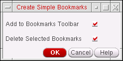 - (Optionally) Check the Add to Bookmarks Toolbar option so that the bookmarks to be detached are available from the Bookmarks toolbar.
- (Optionally) Check the Delete Selected Bookmarks option if you want to delete the selected bookmarks from their current composite bookmark host.
-
Click the OK button to create the simple bookmarks.
If chosen, the bookmarks will also appear in the Bookmark toolbar and/or be deleted from the composite it was initially found in.
Working with Views
See the following sections for more information:
Saving a View
To save a view, do the following:
-
Choose View – Save/Restore – Save View.
The Save View form appears.
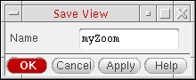 - In the Name field, type a name for your view.
- Click OK.
Restoring a Saved View
To restore a saved view, do the following:
-
Choose View – Save/Restore.
The Restore View form appears.
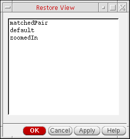 - Select the view you want to restore.
-
Click OK.
The program restores the selected view.
Restoring the Previous View
To restore the previous view, do the following:
Restoring the Next View
To restore the next view, do the following:
Return to top